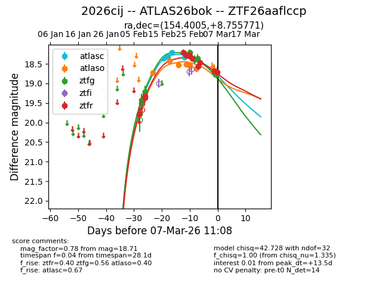
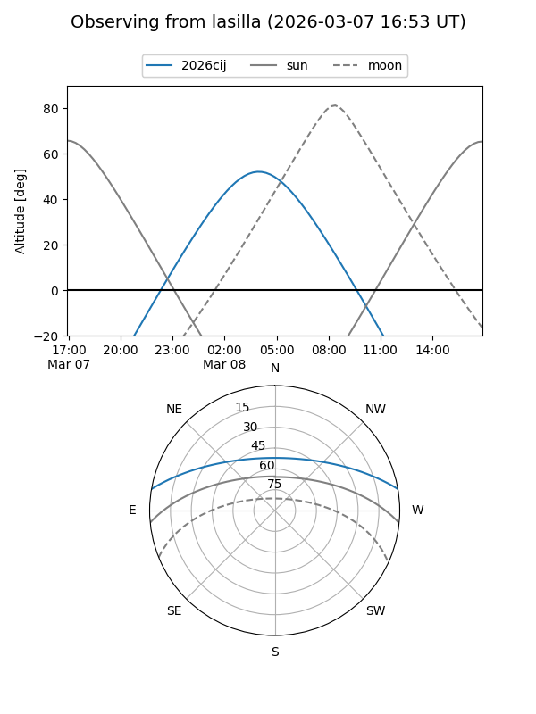
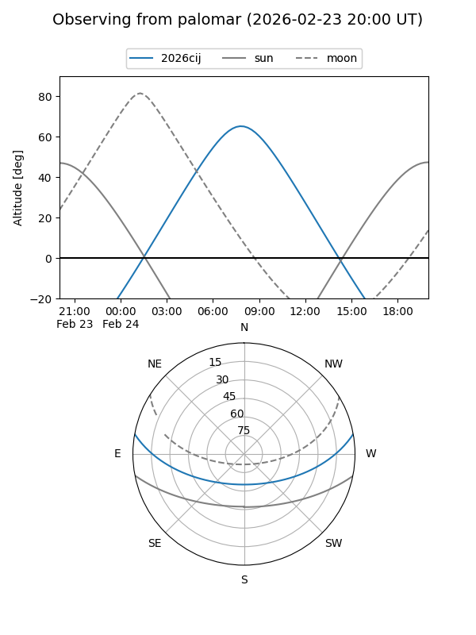
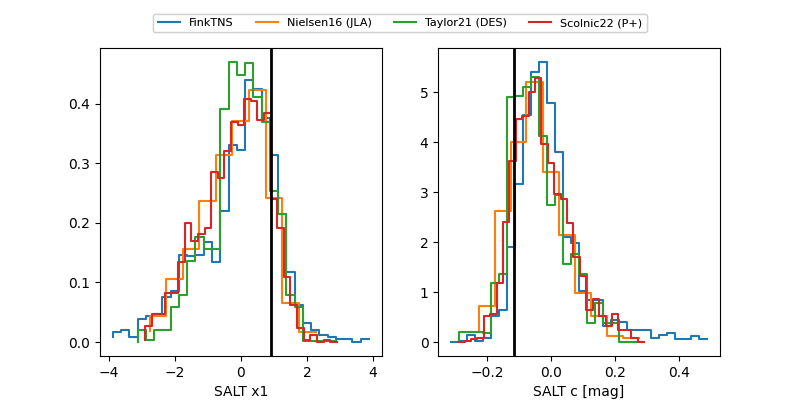

2026cij
Target 2026cij at 2026-03-07 11:11
Aliases and brokers:
FINK: link
Lasair: link
ALeRCE: link
TNS: link
YSE: link
alt names
ZTF26aaflccp (ztf,fink_ztf)
2026cij (tns,yse)
ATLAS26bok (atlas)
Coordinates:
equatorial (ra, dec) = 154.4005,+8.75577
equatorial (HMS+DMS) = 10:17:36.12,+08:45:20.77
galactic (l, b) = (232.4106,+49.30558)
Flags:
Photometry:
last atlasc=18.33, atlaso=18.63, ztfg=18.77, ztfr=18.71
4 atlasc, 6 atlaso, 10 ztfg, 11 ztfr detections
Lightcurve

Visibility


Additional plots
